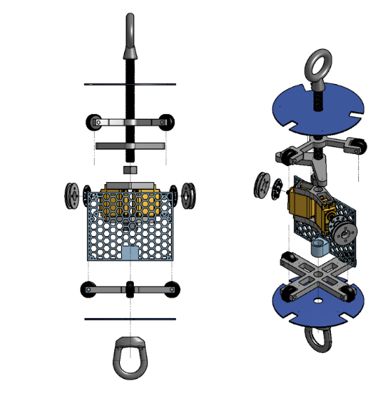

May 2024
Tools: Arduino, Python, Simulink

Exploded view of the recovery module: a honeycomb shell, servos, and the plates that tie it into the airframe.
I designed the first guided recovery system for Duke AERO. On the way down, the system steers the rocket toward a chosen landing area.
The figure is the mechanical module. A honeycomb shell holds the servos, and eye bolts on the end plates are the load path into the rest of the rocket. The left view is the stack along the axis. The right view is the same parts pulled apart.
Arduino ran the onboard control. Python covered the supporting software. Simulink was the model of the guidance loop, so the steering could be checked before it was trusted on hardware. The system was in place in May 2024.